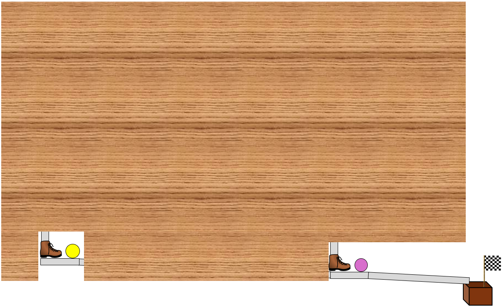

<!DOCTYPE html>
<html>
  <head>
    <title>Demo</title>
    <script src="jspsych/jspsych.js"></script>
    <script src="jspsych/plugin-html-button-response.js"></script>
    <script src="jspsych/plugin-survey-multi-choice.js"></script>
    <script src="jspsych/plugin-html-slider-response.js"></script>
    <script src="jspsych/plugin-image-keyboard-response.js"></script>
    <script src="jspsych/plugin-image-button-response.js"></script>
    <script src="jspsych/plugin-image-slider-response.js"></script>
    <script src="jspsych/plugin-html-keyboard-response.js"></script>
    <script src="jspsych/plugin-survey-likert.js"></script>
    <script src="jspsych/plugin-survey-html-form.js"></script>
    <script src="jspsych/plugin-preload.js"></script>
    <script src="jspsych/plugin-survey-text.js"></script>
    <link href="jspsych/jspsych.css" rel="stylesheet" type="text/css" />
  </head>
  <body></body>
  <script>

// run study with ?demo=true at the end of url to have the demo mode

var jsPsych = initJsPsych({
  experiment_width: 1000,
  on_finish: function(){
    window.location = "https://app.prolific.com/submissions/complete?cc=C11QKGDG"
  }
});

var condition;
jsPsych.data.addProperties({condition: +condition});

// DEMO MODE FLAG
var demo_mode = false; // set true for demo

// 🧠 DEBUG FLAGS — you can toggle these:
const skip_learning = false;  // ⏩ set true to skip entire learning phase
const enable_skip_key = false; // press "S" during a video to skip that trial

// Enhanced answer requirement and mode control
function answ_req() {
  let ans_required = !demo_mode;

  if (!demo_mode) {
    document.addEventListener('contextmenu', e => e.preventDefault());
    document.onselectstart = () => false;

    document.onkeydown = function (e) {
      if (e.ctrlKey && (e.key === 'c' || e.key === 'v' || e.key === 'x')) {
        e.preventDefault();
      }
    };

    document.addEventListener('keydown', function (e) {
      if ((e.ctrlKey || e.metaKey) && (e.key === '=' || e.key === '-' || e.key === '0')) {
        e.preventDefault();
      }
    }, false);

    document.addEventListener('wheel', function (e) {
      if (e.ctrlKey || e.metaKey) e.preventDefault();
    }, { passive: false });
  } else {
    console.log("Demo mode active: answers not required, clips skippable.");
  }
  return ans_required;
}

var answ_required = answ_req();
console.log("demo mode = "+demo_mode, ", answers required: "+answ_required);

// Generate subject code
function makeid(length) {
    var result = '';
    var characters = 'ABCDEFGHIJKLMNOPQRSTUVWXYZabcdefghijklmnopqrstuvwxyz0123456789';
    for ( var i = 0; i < length; i++ ) {
      result += characters.charAt(Math.floor(Math.random() * characters.length));
    }
    return result;
}
var subj_code = makeid(12);
jsPsych.data.addProperties({subj_code: subj_code});

/* create timeline */
var timeline = [];

/* preload images */
var preload = {
  type: jsPsychPreload,
  images: ["img/uni_org_color_li.png", 

  'img/1_1.png',
  'img/025_025.png',
  'img/075_075.png',
  'img/05_05.png',
  'img/0_0.png',


  'img/C0_E0.png',
  'img/C1_E0.png',
  'img/C0_E1.png',
  'img/C1_E1.png'
  ]
}
timeline.push(preload);

// Add custom CSS
var styles = `p { text-align: justify }`;
var styleSheet = document.createElement("style");
styleSheet.type = "text/css";
styleSheet.innerText = styles;
document.head.appendChild(styleSheet);

// Condition selection (demo only)
var select = {
  type: jsPsychSurveyText,
  questions: [
    {
      prompt: `<p><b>This study is in DEMO MODE.</b></p>
      <p>Select a condition:</p>
      <p>1: { machine: "opaque", contingency: "1_1"},<br>
      2: { machine: "transp", contingency: "1_1"},<br>
      3: { machine: "opaque", contingency: "075_075"},<br>
      4: { machine: "transp", contingency: "075_075"},<br>
      5: { machine: "opaque", contingency: "05_05"},<br>
      6: { machine: "transp", contingency: "05_05"},<br>
      7: { machine: "opaque", contingency: "025_025"},<br>
      8: { machine: "transp", contingency: "025_025"},<br>
      9: { machine: "opaque", contingency: "0_0"},<br>
      10: { machine: "transp", contingency: "0_0"},<br>
      </p>
      `
      
      
      ,
      placeholder: 'number between 1 and 10',
      required: true,
      name: 'CondSel'
    }
  ],
  on_finish: function(data){ condition = data.response.CondSel; }
};
timeline.push(select);

// Confirmations
var confs = {
  type: jsPsychSurveyMultiChoice,
  questions: [
    { prompt: "Please confirm that you take part via Desktop PC or Laptop.", name: 'DesktopConf', options: ['1: I confirm', '2: I do not confirm'], required: true },
    { prompt: "Please confirm that will take your participation seriously.", name: 'AttentConf', options: ['1: I confirm', '2: I do not confirm'], required: true }
  ],
  on_finish: function (data) {
    const map = {
      1: { machine: "opaque", contingency: "1_1"},
      2: { machine: "transp", contingency: "1_1"},
      3: { machine: "opaque", contingency: "075_075"},
      4: { machine: "transp", contingency: "075_075"},
      5: { machine: "opaque", contingency: "05_05"},
      6: { machine: "transp", contingency: "05_05"},
      7: { machine: "opaque", contingency: "025_025"},
      8: { machine: "transp", contingency: "025_025"},
      9: { machine: "opaque", contingency: "0_0"},
      10: { machine: "transp", contingency: "0_0"},
    };
    const sel = map[condition];
    machine = sel.machine;
    contingency = sel.contingency;
    console.log(`machine selected: ${condition} → ${machine}`);
    console.log(`contingency selected: ${condition} → ${contingency}`);
    jsPsych.data.addProperties({
      desktop_conf: data.response.DesktopConf,
      attent_conf: data.response.AttentConf,
      machine: machine,
      contingency: contingency
    });


  },
  preamble: `<p></img></p>
  <p>Please note: This study contains memory/comprehension checks.</p>`
};
timeline.push(confs);

// Instructions
const intro_masked = {
  type: jsPsychHtmlButtonResponse,
  stimulus: `
    <h2>Welcome to the experiment</h2>

    <p>This study is about an unfamiliar device that was originally developed by psychologists to study causal learning in children. An illustration is shown below.</p>

    <p>This device can produce movements of a <b><span style="color: #FFD700;">yellow</span></b> and a <b><span style="color: #FF69B4;">pink</span></b> ball.</p>

    <p>The picture shows the device in a situation in which neither the yellow nor the pink ball moved; both balls stayed put in their initial positions.</p>
    <p></img></p>

    <p>Different versions/models of this device have been constructed by the researchers. 
      In <b>half of the existing models</b>, the mechanism inside was designed such that the rolling of the yellow ball <b>can cause</b> the pink ball to roll. 
      Also, depending on the specific mechanism inside the device, the probability with which the rolling of the yellow ball causes the pink ball to roll varies. Also, some devices
      contain an additional triggering mechanism that can cause the pink ball to roll, independently of the yellow ball.</p>    
      
    <p>In <b>the other half</b> of the existing versions of the device (the "non-causal" models), 
      the mechanism was designed such that the yellow ball <b>cannot cause</b> the pink ball to roll. 
      In these versions, movements of the pink ball are always caused by an alternative triggering mechanism.</p>

    <p>The mechanism inside the specific model displayed above is covered, and all models of the device look the same from the outside.</p>
    
    <hr>

    <p><i>If you've thoroughly read the information on this screen, click "Continue" to proceed.</i></p>
    
      `, 
  choices: ['Continue']
};

const intro_transparent = {
  type: jsPsychHtmlButtonResponse,
  stimulus: function() {

    // Decide which mechanism illustration to show
    let mech_img;

    if (contingency === "1_1" && machine === "transp") {
      mech_img = "img/1_1.png";    
    } 
    else if (contingency === "075_075" && machine === "transp") {
      mech_img = "img/075_075.png";
    }
    else if (contingency === "05_05" && machine === "transp") {
      mech_img = "img/05_05.png";
    }
    else if (contingency === "025_025" && machine === "transp") {
      mech_img = "img/025_025.png";
    }
    else if (contingency === "0_0" && machine === "transp") {
      mech_img = "img/0_0.png";
    }
    else{
      mech_img = "img/C0_E0.png"
    }

    return `
      <h2>Welcome to the experiment</h2>

    <p>This study is about an unfamiliar device that was originally developed by psychologists to study causal learning in children. An illustration is shown below.</p>

    <p>This device can produce movements of a <b><span style="color: #FFD700;">yellow</span></b> and a <b><span style="color: #FF69B4;">pink</span></b> ball.</p>

    <p>The picture shows the device in a situation in which neither the yellow nor the pink ball moved; both balls stayed put in their initial positions.</p>
    <p></img></p>

    <p>Different versions/models of this device have been constructed by the researchers. 
      In <b>half of the existing models</b>, the mechanism inside was designed such that the rolling of the yellow ball <b>can cause</b> the pink ball to roll. 
      Also, depending on the specific mechanism inside the device, the probability with which the rolling of the yellow ball causes the pink ball to roll varies. Also, some devices
      contain an additional triggering mechanism that can cause the pink ball to roll, independently of the yellow ball.</p>  
      
    <p>In <b>the other half</b> of the existing versions of the device (the "non-causal" models), 
      the mechanism was designed such that the yellow ball <b>cannot cause</b> the pink ball to roll. 
      In these versions, movements of the pink ball are always caused by an alternative triggering mechanism.</p>

    <p>The mechanism inside the specific model displayed above is covered, and all models of the device look the same from the outside.</p>

    <hr>

      <p><b>Looking at one specific version of the device:</b></p>

      <p>Below you see the inside (the mechanism below the wooden cover) of one specific version of the device. 
        Study it to learn how this specific version of the device works and whether it is one in which the yellow ball can cause the pink ball to roll or not.</p>

      <p></img></p>

      <hr>

      <p><i>If you've thoroughly read the information on this screen, click "Continue" to proceed.</i></p>
    `;
  },
  choices: ['Continue']
};


var masked_decider = {
  timeline: [intro_masked],
  conditional_function: function() {
    return machine === "opaque"; 
  }
};

var transparent_decider = {
  timeline: [intro_transparent],
  conditional_function: function() {
    return machine != "opaque";
  }
};


timeline.push(masked_decider, 
              transparent_decider
);            


/////////////////////////////////////// Assessing the prior /////////////////////////////


var test_structure_prior = {
  type: jsPsychSurveyHtmlForm,

  preamble: function() {

    // Decide which mechanism illustration to show
    let mech_img;

    if (contingency === "1_1" && machine === "transp") {
      mech_img = "img/1_1.png";    
    } 
    else if (contingency === "075_075" && machine === "transp") {
      mech_img = "img/075_075.png";
    }
    else if (contingency === "05_05" && machine === "transp") {
      mech_img = "img/05_05.png";
    }
    else if (contingency === "025_025" && machine === "transp") {
      mech_img = "img/025_025.png";
    }
    else if (contingency === "0_0" && machine === "transp") {
      mech_img = "img/0_0.png";
    }
    else{
      mech_img = "img/C0_E0.png"
    }


    return `
      <p><b>The picture below shows the same device again.</b></p>
      <p></img></p>
      <hr>
    `;
  },

  html: `
    <style>
      input[type="range"] {
        -webkit-appearance: none;
        width: 100%;
        height: 8px;
        background: #d3d3d3;
        outline: none;
        opacity: 0.7;
        transition: opacity .2s;
        border-radius: 5px;
      }

      input[type="range"]::-webkit-slider-thumb {
        -webkit-appearance: none;
        width: 20px; height: 20px;
        border-radius: 50%;
        background: #00008B;
        cursor: pointer;
        opacity: 0;
        transition: opacity 0.2s ease-in-out;
        margin-top: -6px;
      }

      input[type="range"].touched::-webkit-slider-thumb { opacity: 1; }
      input[type="range"].touched::-webkit-slider-runnable-track { background: #2196F3; }

      .slider-label {
        font-size: 0.75em;
        line-height: 1.3;
      }

      .slider-value-display {
        font-weight: bold;
        margin-top: 10px;
        display: block;
        text-align: center;
        visibility: hidden;
        opacity: 0;
        transition: opacity 0.2s ease-in-out, visibility 0.2s ease-in-out;
      }

      .slider-value-display.visible {
        visibility: visible;
        opacity: 1;
      }
    </style>

    <div style="margin-bottom: 40px;">
       <p><b>How confident are you that the present device above is one in which the rolling of the
        <span style="color:#FFD700;">yellow</span> ball can cause the rolling of the 
        <span style="color:#FF69B4;">pink</span> ball?</b><br>
        <i>Please use the scale below to report your confidence.</i></p>


      <input type="range" id="slider1" name="structure_rating_prior" 
             min="0" max="100" value="50" step="1"
             style="width: 100%;" data-interacted="false">

      <div style="display: flex; justify-content: space-between; text-align: center;">
        <span class="slider-label" style="width: 10%;">Rolling of the <span style="color:#FFD700;">yellow</span> ball <b><u>CANNOT cause</u></b> rolling of the <span style="color:#FF69B4;">pink</span> ball</span>
        <span class="slider-label" style="width: 10%;"><b>Uncertain</b></span>
        <span class="slider-label" style="width: 10%;">Rolling of the <span style="color:#FFD700;">yellow</span> ball <b><u>CAN cause</u></b> cause rolling of the <span style="color:#FF69B4;">pink</span> ball</span>
      </div>

      <span id="slider1-value" class="slider-value-display"></span>
    </div>
  `,

  on_load: function() {
    const demo = (typeof demo_mode !== 'undefined' && demo_mode === true);
    const slider = document.getElementById('slider1');
    const display = document.getElementById('slider1-value');
    const button = document.querySelector('#jspsych-survey-html-form-next');

    const update = () => {
      const v = slider.value;
      display.textContent = `Selected value: ${v}%`;
    };

    const check = () => {
      button.disabled = !demo && slider.dataset.interacted !== 'true';
    };

    const activate = () => {
      slider.classList.add('touched');
      slider.dataset.interacted = 'true';
      display.classList.add('visible');
      update();
      check();
      if (!demo) {
        slider.removeEventListener('mouseup', activate);
        slider.removeEventListener('touchend', activate);
      }
    };

    // Require first click
    if (!demo) {
      slider.addEventListener('mouseup', activate);
      slider.addEventListener('touchend', activate);
    }

    // Update display continuously
    slider.addEventListener('input', () => {
      update();
      if (!demo) slider.dataset.interacted = 'true';
      check();
    });

    update();
    check();
  },

  on_finish: function(data) {
    const response = data.response.structure_rating_prior;
    data.structure_rating_prior = response;
    jsPsych.data.addProperties({ structure_rating_prior: response });
    console.log("structure rating:", response);
  }
};


timeline.push(test_structure_prior);            


///////////////////////////////////////////////////////////////// Contingency learning 


// Instructions
const intro_opaque = {
  type: jsPsychHtmlButtonResponse,
  stimulus: `
    <h2>Observation phase</h2>
    <p>You will next be shown 8 pictures of this specific device in action.</p>
    <p>Your task is to study each picture and check if the <b><span style="color: #FFD700;">yellow</span></b> and the <b><span style="color: #FF69B4;">pink</span></b> ball rolled.</p>

    <p>Click "Continue" to start.</p>`,
  choices: ['Continue']
};


// Instructions
const intro_transp = {
  type: jsPsychHtmlButtonResponse,
  stimulus: `
    <h2>Observation phase</h2>
    <p>You will next be shown 8 pictures of this device in action.</p>
    <p>Your task is to study each picture and check if the <b><span style="color: #FFD700;">yellow</span></b> and the <b><span style="color: #FF69B4;">pink</span></b> ball rolled.</p>

    <p>The device's mechanism will remain covered during this phase, but you've learned what it looks like on the previous screens.</p>

    <p>Click "Continue" to start.</p>`,
  choices: ['Continue']
};

// Decider for instruction type based on condition (opaque vs. transparent)
var instruction_decider = {
  timeline: [intro_opaque],
  conditional_function: function() {
    return machine === "opaque"; 
  }
};

var instruction_decider_transp = {
  timeline: [intro_transp],
  conditional_function: function() {
    return machine != "opaque";
  }
};

timeline.push(instruction_decider, instruction_decider_transp);

///////////////////////////////////////// Learning phase (opaque .png images, contingency-based) /////////////////////////

// Render an image trial
function makeImageHTML(src) {
  return `
    <p><b>The picture below shows an occasion on which the device was activated. Please look carefully at the picture below and check which ball rolled on this occasion.</b></p>
    <br>
    
  `;
}

// OPAQUE image sets by contingency
const imageSets = {
  "0_0":        ["C0_E0", "C1_E0"],
  "025_025":    ["C0_E0", "C0_E0", "C0_E0", "C0_E1", "C1_E0", "C1_E0", "C1_E0", "C1_E1"],
  "05_05":      ["C0_E0", "C1_E0", "C1_E1", "C0_E1"],
  "075_075":    ["C0_E0", "C0_E1", "C0_E1", "C0_E1", "C1_E0", "C1_E1", "C1_E1", "C1_E1"],
  "1_1":        ["C0_E1", "C1_E1"]
};

// Build 8 stimuli for a given contingency
function generateImageStimuli(cont) {
  const base = imageSets[cont];
  const repeats = Math.ceil(8 / base.length);
  const list = Array.from({ length: repeats * base.length }, (_, i) => base[i % base.length]).slice(0, 8);

  return list.map(f => ({
    stimulus: makeImageHTML(`img/${f}.png`),
    file_id: f   // store file ID for correctness scoring
  }));
}

// Fixation trial
var fixation = {
  type: jsPsychHtmlKeyboardResponse,
  stimulus: '<div style="font-size:60px;"></div>',
  choices: "NO_KEYS",
  trial_duration: 500
};

// Learning trial with movement judgments
var learning = {
  type: jsPsychSurveyMultiChoice,

  preamble: jsPsych.timelineVariable('stimulus'),

  questions: [
    {
      prompt: `On this occasion, the <b><span style="color: #FFD700;">yellow</span></b> ball...`,
      name: "yellow_choice",
      options: ["rolled", "did not roll"],
      required: true
    },
    {
      prompt: `On this occasion, the <b><span style="color: #FF69B4;">pink</span></b> ball...`,
      name: "pink_choice",
      options: ["rolled", "did not roll"],
      required: true
    }
  ],

  data: {
    phase: "learning",
    file_id: jsPsych.timelineVariable('file_id')
  },

  on_load: function () {
    const btn = document.querySelector('#jspsych-survey-multi-choice-next');

    if (demo_mode) return;

    btn.disabled = true;   // invisible wait
    setTimeout(() => { btn.disabled = false; }, 3000);
  },

  on_finish: function(data) {

    const fileID = data.file_id;   // e.g., "C1_E0"

    // Ground truth movement from filename
    const trueYellow = fileID[1] === "1" ? 1 : 0;  // C1_E? → yellow moved
    const truePink   = fileID[4] === "1" ? 1 : 0;  // C?_E1 → pink moved

    // Convert participant responses to 1/0
    const yellowAns = data.response.yellow_choice === "rolled" ? 1 : 0;
    const pinkAns   = data.response.pink_choice   === "rolled" ? 1 : 0;

    // Store correctness
    data.yellow_correct = (yellowAns === trueYellow) ? 1 : 0;
    data.pink_correct   = (pinkAns === truePink)     ? 1 : 0;

    // Store ground truth
    data.true_yellow = trueYellow;
    data.true_pink   = truePink;

    console.log(
      `Trial ${fileID} → Yellow: ${yellowAns} (true ${trueYellow}), Pink: ${pinkAns} (true ${truePink})`
    );
  }
};

// Insert a learning block for each contingency (only one runs)
const contingencies = Object.keys(imageSets);

for (const cont of contingencies) {

  const learning_procedure = {
    timeline: [fixation, learning],
    timeline_variables: generateImageStimuli(cont),
    randomize_order: true
  };

  timeline.push({
    timeline: [learning_procedure],
    conditional_function: function () {
      const isActive = contingency === cont;   // "contingency" set previously
      if (isActive) console.log(`Loaded learning procedure: opaque_${cont}`);
      return isActive;
    }
  });
}

var summarize_learning_accuracy = {
  type: jsPsychHtmlKeyboardResponse,
  stimulus: "",
  choices: "NO_KEYS",
  trial_duration: 1,

  on_start: function() {

    const trials = jsPsych.data.get().filter({phase: "learning"});

    const totalYellowCorrect = trials.select('yellow_correct').sum();
    const totalPinkCorrect   = trials.select('pink_correct').sum();

    const n = trials.count();

    jsPsych.data.addProperties({
      learning_yellow_correct_total: totalYellowCorrect,
      learning_pink_correct_total: totalPinkCorrect,
      learning_yellow_accuracy: totalYellowCorrect / n,
      learning_pink_accuracy: totalPinkCorrect / n
    });

    console.log("Summary:");
    console.log("Yellow:", totalYellowCorrect, "/", n);
    console.log("Pink:", totalPinkCorrect, "/", n);
  }
};

timeline.push(summarize_learning_accuracy);

/////////////////////////////////////////////////////////////// End of learning phase /////////////////////////


// Instructions
const intro_test = {
  type: jsPsychHtmlButtonResponse,
  stimulus: `
    <h2>End of observation phase</h2>
    <p>You finished the observation phase.</p>
    <p>On the next screen, we will ask you the question from the beginning again.</p>

    <p>Click "Continue" to proceed.</p>`,
  choices: ['Continue']
};

timeline.push(intro_test)

////////////////////////////////////////////////////////////// Posterior /////////////////////////////////////////

var test_structure_posterior = {
  type: jsPsychSurveyHtmlForm,

  preamble: function() {

    // Decide which mechanism illustration to show
    let mech_img;

    if (contingency === "1_1" && machine === "transp") {
      mech_img = "img/1_1.png";    
    } 
    else if (contingency === "075_075" && machine === "transp") {
      mech_img = "img/075_075.png";
    }
    else if (contingency === "05_05" && machine === "transp") {
      mech_img = "img/05_05.png";
    }
    else if (contingency === "025_025" && machine === "transp") {
      mech_img = "img/025_025.png";
    }
    else if (contingency === "0_0" && machine === "transp") {
      mech_img = "img/0_0.png";
    }
    else{
      mech_img = "img/C0_E0.png"
    }


    return `
      <p><b>The picture below shows the same device again.</b></p>
      <p></img></p>
      <hr>
    `;
  },

  html: `
    <style>
      input[type="range"] {
        -webkit-appearance: none;
        width: 100%;
        height: 8px;
        background: #d3d3d3;
        outline: none;
        opacity: 0.7;
        transition: opacity .2s;
        border-radius: 5px;
      }

      input[type="range"]::-webkit-slider-thumb {
        -webkit-appearance: none;
        width: 20px; height: 20px;
        border-radius: 50%;
        background: #00008B;
        cursor: pointer;
        opacity: 0;
        transition: opacity 0.2s ease-in-out;
        margin-top: -6px;
      }

      input[type="range"].touched::-webkit-slider-thumb { opacity: 1; }
      input[type="range"].touched::-webkit-slider-runnable-track { background: #2196F3; }

      .slider-label {
        font-size: 0.75em;
        line-height: 1.3;
      }

      .slider-value-display {
        font-weight: bold;
        margin-top: 10px;
        display: block;
        text-align: center;
        visibility: hidden;
        opacity: 0;
        transition: opacity 0.2s ease-in-out, visibility 0.2s ease-in-out;
      }

      .slider-value-display.visible {
        visibility: visible;
        opacity: 1;
      }
    </style>

    <div style="margin-bottom: 40px;">
       <p><b>How confident are you that the present device above is one in which the rolling of the
        <span style="color:#FFD700;">yellow</span> ball can cause the rolling of the 
        <span style="color:#FF69B4;">pink</span> ball?</b><br>
        <i>Please use the scale below to report your confidence.</i></p>


      <input type="range" id="slider1" name="structure_rating_posterior" 
             min="0" max="100" value="50" step="1"
             style="width: 100%;" data-interacted="false">

      <div style="display: flex; justify-content: space-between; text-align: center;">
        <span class="slider-label" style="width: 10%;">Rolling of the <span style="color:#FFD700;">yellow</span> ball <b><u>CANNOT cause</u></b> rolling of the <span style="color:#FF69B4;">pink</span> ball</span>
        <span class="slider-label" style="width: 10%;"><b>Uncertain</b></span>
        <span class="slider-label" style="width: 10%;">Rolling of the <span style="color:#FFD700;">yellow</span> ball <b><u>CAN cause</u></b> cause rolling of the <span style="color:#FF69B4;">pink</span> ball</span>
      </div>

      <span id="slider1-value" class="slider-value-display"></span>
    </div>
  `,

  on_load: function() {
    const demo = (typeof demo_mode !== 'undefined' && demo_mode === true);
    const slider = document.getElementById('slider1');
    const display = document.getElementById('slider1-value');
    const button = document.querySelector('#jspsych-survey-html-form-next');

    const update = () => {
      const v = slider.value;
      display.textContent = `Selected value: ${v}%`;
    };

    const check = () => {
      button.disabled = !demo && slider.dataset.interacted !== 'true';
    };

    const activate = () => {
      slider.classList.add('touched');
      slider.dataset.interacted = 'true';
      display.classList.add('visible');
      update();
      check();
      if (!demo) {
        slider.removeEventListener('mouseup', activate);
        slider.removeEventListener('touchend', activate);
      }
    };

    // Require first click
    if (!demo) {
      slider.addEventListener('mouseup', activate);
      slider.addEventListener('touchend', activate);
    }

    // Update display continuously
    slider.addEventListener('input', () => {
      update();
      if (!demo) slider.dataset.interacted = 'true';
      check();
    });

    update();
    check();
  },

  on_finish: function(data) {
    const response = data.response.structure_rating_posterior;
    data.structure_rating_posterior = response;
    jsPsych.data.addProperties({ structure_rating_posterior: response });
    console.log("structure rating:", response);
  }
};

timeline.push(test_structure_posterior);

/////////////////////////////////////// demographics
var demogr_age = {
  type: jsPsychSurveyText,
  name: 'Age_query',
  questions: [
    {prompt: 'You are almost done with this study, but we have some final questions. <br> How old are you?', 
    placeholder: 'Age as a number', 
    required: true,
    name: 'Age'
    },
  ],
  on_finish: function(data){
	  jsPsych.data.addProperties({age: data.response.Age});
  },
}

var demogr_gender = {
  type: jsPsychSurveyMultiChoice,
  name: 'gender_query',
  questions: [
    {
      prompt: "Please indicate with which gender you identify.", 
      options: ['1: male', '2: female', '3: non-binary', '4: prefer not to say'],
      required: true,
      name: 'Gender'
    },
  ],
  on_finish: function(data){
	  jsPsych.data.addProperties({gender: data.response.Gender});
  },
};

//timeline.push(demogr_age, demogr_gender);


/////////////////////////////////////// technical issues
var tech_issues = {
  type: jsPsychSurveyText,
  name: 'Tech_issue_query',
  questions: [
    {prompt: 'In the text field below you can report any errors that you came across during the study (e.g., technical issues, layout problems, spelling errors, errors in program logic and flow, etc.).', 
    rows: 10, 
    columns: 100, 
    required: false,
    name: 'Tech_issue_report'
    },
  ],
  on_finish: function(data){
	  jsPsych.data.addProperties({tech_issues: data.response.Tech_issue_report});
	  console.log(data.response.Tech_issue_report)
  },
}
timeline.push(tech_issues);

///////////////////////////////////// debriefing

var debriefing = {
  type: jsPsychHtmlButtonResponse,
  stimulus: 
    `
    </img>
    <p><b>Thank you for taking part in this study!</b></p>
  
    <p>The aim of this experiment is to find out more about how people reason about causality. 
    If you are interested in further details or if you have any questions or comments concerning the experiment, 
    feel free to contact me (ANONYMIZED) under <i>ANONYMIZED</i>
    To ensure you receive your reward, please click the button below to return to the Prolific website:
    `
    ,
    choices: ['Finish study']
};
timeline.push(debriefing);


/////////////////////////////////////////////////////////////////
/* start the experiment */
    jsPsych.run(timeline);
    //jsPsych.simulate(timeline);

  
  </script>
</html>
